Duyệt trang phục thời Trần — mẫu trên sơn tặc enemy122
active = đang gắn game · candidate = bản mới chờ bạn chọn · goc = đối chiếu
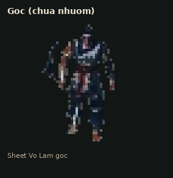
goc · Gốc
reference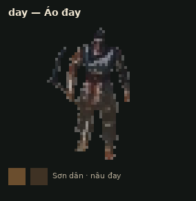
day · Áo đay
Sơn dân · nâu đay
active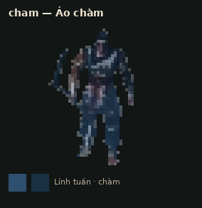
cham · Áo chàm
Lính tuần · chàm
active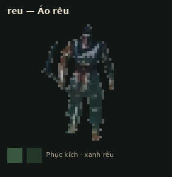
reu · Áo rêu
Phục kích · xanh rêu
active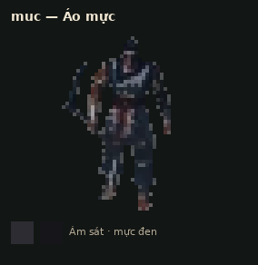
muc · Áo mực
Ám sát · mực đen
active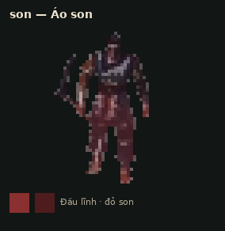
son · Áo son
Đầu lĩnh · đỏ son
active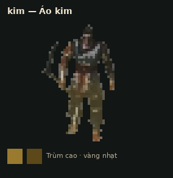
kim · Áo kim
Trùm cao · vàng nhạt
active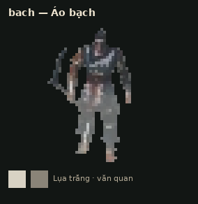
bach · Áo bạch
Lụa trắng · văn quan
active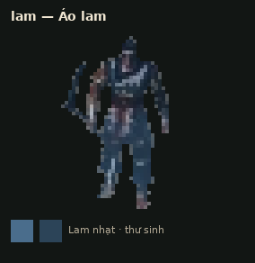
lam · Áo lam
Lam nhạt · thư sinh
active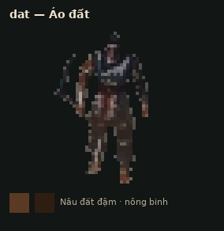
dat · Áo đất
Nâu đất đậm · nông binh
active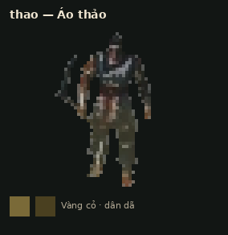
thao · Áo thảo
Vàng cỏ · dân dã
active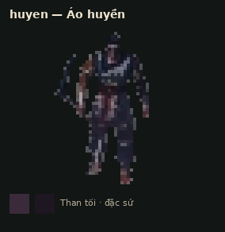
huyen · Áo huyền
Than tối · đặc sứ
active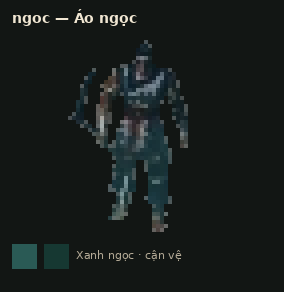
ngoc · Áo ngọc
Xanh ngọc · cận vệ
active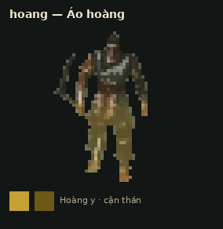
hoang · Áo hoàng
Hoàng y · cận thần
active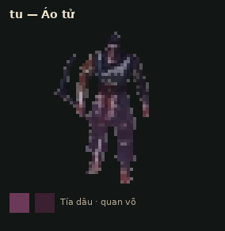
tu · Áo tử
Tía dâu · quan võ
active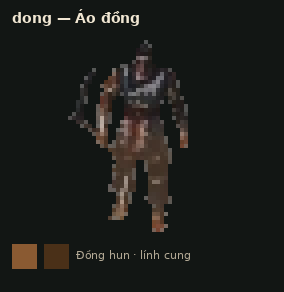
dong · Áo đồng
Đồng hun · lính cung
active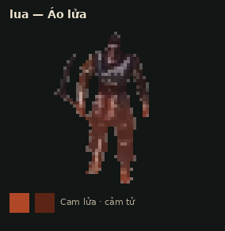
lua · Áo lửa
Cam lửa · cảm tử
active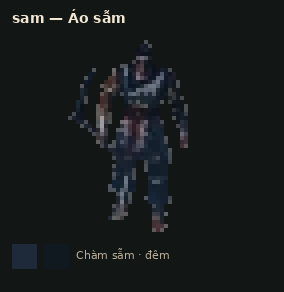
sam · Áo sẫm
Chàm sẫm · đêm
active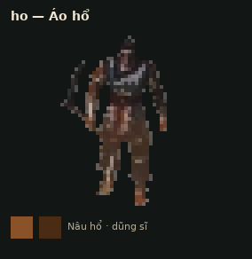
ho · Áo hổ
Nâu hổ · dũng sĩ
active